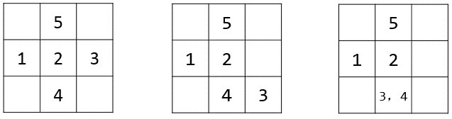

第一行，两个数n和M。
描下来r一行，每行两个数xi,yi
下一行，一个数t。
描下来t行，每行的格式为下列两种格式之一
(l)S x d,其中S∈{U,L,D,R}，代表第一种事：
(2)Q x L R，代表第二种事件。
为了体现在线询问,每次你读进x'后，真正的x=x' xor lastans,其中lastans是上一次答案对10^9+7取模后的结果，一开始lastans=0
第一行，两个数n和M。
描下来r一行，每行两个数xi,yi
下一行，一个数t。
描下来t行，每行的格式为下列两种格式之一
(l)S x d,其中S∈{U,L,D,R}，代表第一种事：
(2)Q x L R，代表第二种事件。
为了体现在线询问,每次你读进x'后，真正的x=x' xor lastans,其中lastans是上一次答案对10^9+7取模后的结果，一开始lastans=0
对于每一个Q事件，输出一个答案，对10^9+7取模
【样例输入】
5 3
1 2
2 2
3 2
2 1
2 3
7
Q 2 1 5
Q 6 3 4
D 1 1
Q 0 1 5
Q 7 1 5
L 5 1
Q 4 1 5
4
2
3
6
4
【样例解释】
解密后的输入：
Q 2 1 5
Q 2 3 4
D 3 1
Q 2 1 5
Q 4 1 5
L 3 1
Q 2 1 5

样例还看不懂就看下图
【数据范围】
n≤100000，m≤10^18。保证军队在移动过程中不会超出边界。
每个军队集结后会回到原来的驻地